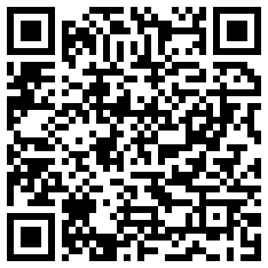

Astronomia (AST0001) · Curso de Física · UDESC
O céu como laboratório físico
Aula 1 · Fundamentos observacionais e escalas de medida
Prof. Dr. Rafael Camargo Rodrigues de Lima · 2026/2
O que esta aula responde
Parte A — onde. Como se mede uma direção, com que precisão, e em que sistema; de onde saem a altura, o nascer e o poente; por que existem estações; por que o dia solar e o sideral diferem de 3 min 56 s; como sair de uma data de calendário e chegar à altura de uma estrela; e por que todo catálogo declara uma época.
Parte B — quão longe, e quão luminosa. Como a paralaxe mede distância por geometria pura; como medi-la em uma imagem; como a incerteza se propaga; e como converter brilho aparente em magnitude absoluta e em luminosidade, passando por extinção e cor.
A Parte A corresponde ao Capítulo 1, Parte A da apostila; a Parte B, à Parte B. Juntas, dão tudo o que o artigo deste capítulo exige.
A limitação que virou método
Quase tudo que sabemos do universo vem de observação à distância.
- Não se coloca uma estrela em uma bancada
- Não se repete a formação de uma galáxia
- Não se acelera a história cósmica
O que chega até nós: luz, posição, tempo, movimento — e, em casos especiais, partículas e ondas gravitacionais.
A cadeia que atravessa o curso inteiro
observável → calibração → modelo → grandeza física
- Fluxo, posição e tempo de chegada são o que se mede
- Massa, distância, temperatura e idade são o que se infere
- Toda inferência carrega hipóteses — e elas precisam ser ditas
Parte A · Sobre ângulos e sistemas de referências
Toda medida de posição no céu é a medida de um ângulo.
- Ângulos, ângulo sólido e resolução
- Os quatro sistemas de coordenadas, e a convenção do azimute
- Trigonometria esférica e a equação da altura
- Da data civil ao tempo sideral e à altura no céu
- Eclíptica, estações, equação do tempo
- Precessão, época e a cadeia de reduções
Responde a pergunta onde.
Medir uma direção é medir um ângulo
- A esfera celeste tem duas dimensões: só direção, nunca distância
- Unidade prática: o segundo de arco
1° = 60′ = 3600″
Aplicação: a maior paralaxe do céu
Proxima Centauri desloca-se 0,77″ ao longo do ano. Em radianos:
É o maior efeito de paralaxe que existe — e são milionésimos de radiano. Toda a astrometria vive nessa escala, e é por isso que a unidade de trabalho é o segundo de arco, não o radiano.
A constante mais usada da astronomia prática
Converter radianos em segundos de arco:
Não é constante física: é só 180 × 3600 / π.
Aplicação: o tamanho angular do Sol
O diâmetro solar sobre a distância, convertido por 206265:
Meio grau — e a Lua subtende quase o mesmo. É essa coincidência que torna possíveis os eclipses totais.
Aproximação de pequenos ângulos
Um objeto de tamanho ℓ a distância d subtende:
Erro menor que 1% para θ < 10°. Em segundos de arco, é exata para qualquer propósito.
Aplicação: o diâmetro de Júpiter
Na oposição o disco mede 47″, e o planeta está a 4,2 UA:
Valor tabelado: 142 984 km — três algarismos batem, e a conta foi uma multiplicação. A mesma relação ao contrário: uma moeda de 1 real subtende 1″ a 5,6 km.
Calibrando a intuição
Do olho nu ao VLBI vão seis ordens e meia de grandeza: 60″ / 20 μas = 3 × 10⁶.
Ângulo sólido
Direções ocupam área na esfera; um cone de meia-abertura α subtende:
Para α pequeno, é a área do disco de raio angular α — e é essa integral que reaparece no Capítulo 3, ao converter intensidade em fluxo.
O céu em graus quadrados
Guarde esse número: ele converte a área de um levantamento em fração do céu, e portanto contagens em densidade.
A esfera celeste
- Não é uma casca real: é uma construção geométrica
- Duas estrelas próximas no céu podem estar a kiloparsecs uma da outra
- Coordenadas celestes fixam direção, não posição
O Cruzeiro do Sul, em profundidade
Seis graus no céu, 112 parsecs no espaço. A cruz é perspectiva, não estrutura: Ginan, que aparece dentro dela, está 69 pc à frente de Imai. — Paralaxes Hipparcos e Gaia EDR3, via SIMBAD
Órion, como se vê da Terra
A alaranjada é Betelgeuse; a azul, Rigel; no meio, o cinturão que aqui se chama Três Marias. É a figura que praticamente toda cultura desenhou no céu. — NASA / STScI, visualização de Frank Summers
A mesma Órion, de outro ponto de vista
As mesmas estrelas, com as mesmas ligações, vistas de um ponto deslocado da Terra: a figura se desfaz. Ela nunca foi um objeto — era o ângulo de onde olhávamos. — NASA / STScI, visualização de Frank Summers
Sistema horizontal
- Plano fundamental: o horizonte do observador
- Coordenadas: azimute Az e altura h
- Responde à pergunta operacional: dá para observar agora?
- Problema: muda a cada minuto, e depende do lugar
Sistema horizontal, na figura
Zênite, horizonte local, nadir; a altura h sobe do horizonte e o azimute Az corre ao longo dele. Tudo aqui depende de onde você está e de que horas são. — Francisco Javier Blanco González, CC BY 2.5, via Wikimedia Commons
Sistema equatorial
- Plano fundamental: o equador celeste
- Coordenadas: ascensão reta α e declinação δ
- É o sistema de catálogo — acompanha a rotação do céu
- Depende da época, por causa da precessão
Eclíptico e galáctico
- Eclíptico: plano da órbita da Terra — natural para o Sistema Solar
- Galáctico: plano da Via Láctea — separa disco de halo imediatamente
- A escolha do sistema é operacional, não estética
Sistema equatorial, na figura
Ascensão reta contada a partir do equinócio vernal, declinação medida a partir do equador celeste. A eclíptica aparece inclinada de 23°26′ — e é o cruzamento dela com o equador que define a origem. — Tfr000, CC BY-SA 3.0, via Wikimedia Commons
Os quatro sistemas
| Sistema | Plano | Coordenadas | Depende de |
|---|
| Horizontal | horizonte | Az, h | local e instante |
| Equatorial | equador celeste | α, δ | época |
| Eclíptico | eclíptica | λ, β | época |
| Galáctico | plano da Galáxia | ℓ, b | nada |
A convenção do azimute
- Neste curso, o azimute é contado a partir do Norte, no sentido N → L → S → O, de 0° a 360°
- A altura é medida sobre o círculo vertical do astro, positiva acima do horizonte
- É a convenção do IAU SOFA, do Stellarium e do astropy
Textos clássicos de astronomia de posição contam o azimute a partir do Sul. Trocar de convenção sem perceber inverte o sinal do azimute calculado — e é um erro que não deixa sintoma.
Por que ascensão reta em horas
- A Terra gira 360° em 24 horas siderais
- 1h de ascensão reta = 15°
- A diferença de α entre dois objetos é o intervalo entre suas culminações
A unidade codifica um relógio.
Trigonometria esférica
Todo problema de posição vira um triângulo sobre a esfera.
Dedução: lei dos cossenos esférica
Vetores unitários do centro a cada vértice, com A na origem:
O produto escalar û_B · û_C dá o resultado direto.
Lei dos cossenos esférica
Para triângulos pequenos, cos x ≈ 1 − x²/2 e sen x ≈ x: recupera-se a lei plana.
Lei dos senos esférica
Sai do produto vetorial, calculando a mesma área de dois modos.
O triângulo polo–zênite–objeto
Os três lados do triângulo PZX:
O ângulo no polo é o ângulo horário H = Θ − α, com Θ o tempo sideral local.
A equação da altura
Aplicando a lei dos cossenos ao lado ZX — e a dos senos, para o azimute:
A primeira responde a quase toda pergunta prática de observação. A segunda deixa ambiguidade de quadrante — adiante, a forma com atan2 resolve isso.
Consequência 1: culminação
Em H = 0 o objeto cruza o meridiano:
Em Joinville (φ ≈ −26°), objetos com δ = −26° passam pelo zênite.
Consequência 2: nascer e poente
Daí sai a duração do arco diurno: 2H₀, convertido para horas.
Consequência 3: circumpolaridade
- Se |tan φ tan δ| > 1, não há solução
- O objeto nunca se põe, ou nunca nasce
- Em Joinville: δ < −64° é circumpolar
Circumpolaridade, fotografada
Longa exposição no observatório Gemini Norte: as estrelas descrevem círculos em torno do polo celeste. As de raio pequeno nunca se põem — são as circumpolares. — International Gemini Observatory/NOIRLab/NSF/AURA, CC BY 4.0
A eclíptica e a obliquidade
- O Sol descreve um grande círculo ao longo do ano: a eclíptica
- Inclinação em relação ao equador: ε = 23°26′
- Essa é a inclinação do eixo de rotação da Terra
Onde a eclíptica passa, fotografado
A luz zodiacal, fotografada no La Silla olhando para oeste depois do pôr do sol: luz solar espalhada pela poeira interplanetária, que se concentra no plano do Sistema Solar. O brilho difuso sobe do horizonte ao longo desse plano — o mesmo em que o Sol se move durante o ano. Não é a eclíptica desenhada no céu: é a poeira que mostra onde ela passa. — ESO/Y. Beletsky, CC BY 4.0
Por que existem estações
O fluxo por unidade de área horizontal:
No verão local, δ tem o mesmo sinal de φ, o Sol sobe mais e sen h é maior.
Os dois efeitos somam
Mais fluxo por unidade de área e mais horas de insolação — os dois na mesma direção.
A geometria das estações
A inclinação do eixo se mantém fixa no espaço enquanto a Terra orbita: em cada solstício um hemisfério recebe luz mais direta e por mais tempo. — NOAA Office of Education, domínio público
A excentricidade não explica
Variação de fluxo ao longo da órbita:
7%, e o periélio é em janeiro — verão do hemisfério sul. O efeito existe, é secundário, e tem sinal oposto entre hemisférios.
A equação do tempo
- O Sol verdadeiro não é bom relógio: adianta e atrasa
- A diferença em relação a um Sol médio tem duas causas independentes
Componente da excentricidade
Segunda lei de Kepler: a Terra corre mais no periélio.
Período de um ano.
Componente da obliquidade
A projeção da eclíptica sobre o equador não é uniforme:
Período de meio ano, porque depende de sen 2λ.
A curva resultante
Duas propriedades geométricas independentes deixam assinatura em um único gráfico observável.
O analema
Posição do Sol no céu sempre no mesmo horário do relógio, ao longo de um ano: o oito deitado é a equação do tempo desenhada no céu. À esquerda às 8h, à direita às 16h. — Daniel Rüdisser, CC BY 4.0, via Wikimedia Commons
Tempo sideral e tempo solar
Dedução dos 3 min 56 s
Em um dia a Terra avança na órbita:
O dia sideral vale 23ʰ56ᵐ04ˢ. Em seis meses a defasagem chega a 12 h — e o céu da meia-noite é o oposto.
Da data civil à altura no céu
A equação da altura só se torna útil quando se sabe obter Θ, o tempo sideral local, a partir de uma data e de uma hora de relógio.
data e hora → JD → GMST → Θ → H → h, Az
- A data vira um contador contínuo de dias
- O contador vira o ângulo de rotação da Terra
- Longitude e ascensão reta dão o ângulo horário
- O triângulo PZX devolve altura e azimute
Quatro elos — e vale percorrê-los uma vez inteira com números.
Elo 1: a data juliana
A JD conta dias corridos desde −4712, e existe para eliminar meses desiguais e anos bissextos das contas:
Data do calendário gregoriano, UT em horas. Se M ≤ 2, faça antes Y → Y − 1 e M → M + 12.
Elo 2: tempo sideral de Greenwich
O tempo sideral médio em Greenwich cresce linearmente com a data juliana:
O primeiro número é o GMST em J2000,0. O segundo excede 360° porque é o ângulo que a Terra gira em um dia solar — é a diferença de 3ᵐ56ˢ deduzida acima, escrita como taxa.
Elos 3 e 4: tempo sideral local
Soma-se a longitude do observador (positiva a leste) e subtrai-se a ascensão reta:
O elo 4 são as duas expressões já deduzidas: a equação da altura e a do azimute.
Exemplo: Antares vista de Joinville
20 de agosto de 2026, 21h00 do horário local (UTC−3). A que altura e em que direção?
| Antares (J2000) | Joinville |
|---|
| α = 16ʰ29ᵐ24,5ˢ = 247,352° | φ = −26,30° |
| δ = −26°25′55″ = −26,432° | λ = −48,85° |
21h00 local são 00h00 UT do dia 21 — a data que entra na conta é a seguinte.
Passos 1 e 2: JD e GMST
Com Y = 2026, M = 8, D = 21 e UT = 0, vem A = 20 e B = −13:
Passos 3 e 4: do ângulo horário à altura
O sinal positivo de H diz que Antares já passou pelo meridiano há pouco mais de duas horas: está a oeste. A altura sai da equação já deduzida, com φ = −26,30° e δ = −26,432°.
O azimute, sem ambiguidade
A lei dos senos deixa dois quadrantes possíveis. Use o arco-tangente de dois argumentos:
Resposta: Antares está a 60° de altura, a oeste-sudoeste.
Duas verificações que não custam nada
Como δ ≈ φ, Antares passa praticamente pelo zênite daqui — o que explica os 60° mesmo duas horas depois da culminação. Se um desses números destoasse do resultado, o erro estaria na cadeia, não no céu.
Precessão dos equinócios
- A Terra é achatada: tem bojo equatorial
- Sol e Lua exercem torque sobre esse bojo
- Um giroscópio não se alinha — ele precessa
A taxa e o período
Sol contribui ~16″/ano, Lua ~34″/ano — a Lua domina, porque o torque escala com M/r³. Sobreposta, a nutação oscila com período de 18,6 anos e amplitude de 9,2″ em obliquidade.
O cone de precessão
O eixo da Terra descreve um cone em 25 800 anos, mantendo a obliquidade de 23,4°. A estrela polar de hoje não é a de daqui a mil anos. — NASA / Mysid, domínio público
Época, equinócio e o ICRS
- Época: instante a que se referem posição e movimento próprio (J2000,0)
- Equinócio: instante que define a orientação dos eixos
- ICRS: adotado em 1998, ancorado em quasares — eixos fixos em 0,03 mas, sem correção de precessão
- Gaia-CRF: a realização óptica, base de toda a astrometria moderna
Sem indicação de época, um catálogo é inutilizável: 50,3″ por ano já são quase um minuto de arco em um único ano — e 2515″, ou 42′, em cinquenta.
Da posição de catálogo ao telescópio
- movimento próprio
- paralaxe anual
- aberração (20,5″)
- deflexão gravitacional pelo Sol (1,75″ no limbo, 4 mas a 90°)
- precessão e nutação
- orientação instantânea da Terra
- refração atmosférica
A soma pode passar de um minuto de arco. Nenhuma etapa é opcional em trabalho de precisão.
O laboratório da Parte A

rafaelcrdelima.github.io/Astronomia/
laboratorio-capitulo-1a/
O céu de Joinvilleroda no navegadorcatálogo próprio
Você vai medir azimute e altura — o que um instrumento entrega — e converter para coordenadas de catálogo. Daí saem a inclinação do plano galáctico, o polo galáctico e a obliquidade da eclíptica.
A abóbada: o que você está vendo
Você está no centroolhando para cima; a borda do círculo é o horizonte e o meio é o zênite
Norte em cima, Leste à esquerdaé a convenção de quem olha para o alto, não para um mapa
Os anéismarcam altura de 30° e 60°; o objeto no centro está a 90°
Só o que está no céuobjetos abaixo do horizonte não aparecem — eles nascem e se põem
Em ciano, a faixa da Via Láctea. Em cinza, estrelas de fundo. Coloridos e com nome, os cinco planetas. E o Sol, com halo.
Os três controles
Dia do ano1 a 365. Move o Sol pela eclíptica e muda o céu da noite
Hora local0 a 24 h, em UTC−3. Gira o céu: é o que faz o azimute e a altura mudarem
Precisão de leitura0,05° a 1,5°. É o erro do seu instrumento, e entra em toda medida
Tempo sideral Θnão é controle: o laboratório calcula de dia e hora, e mostra no painel
Sítio fixo: Joinville, φ = −26,30°, λ = −48,85°. Guarde os dois números — sem eles a conversão não fecha.
Medir: do clique ao registro
- Clique perto de um objeto: ele fica circulado em dourado
- O painel mostra A, h, a população e o Θ do instante
- A faixa acima da abóbada mostra também o α e o δ já convertidos
- Clique em Registrar medida — a linha entra na tabela
Cada leitura já vem com o erro do instrumento aplicado: medir o mesmo objeto duas vezes não dá o mesmo número, como na bancada.
O que registrar, e quanto
15 objetos da faixaem horários e datas diferentes, senão você só pega um pedaço do céu
Os cinco planetascada um quando estiver acima do horizonte; varie a data para achá-los
O Sol em 12 datasbotão Medir o Sol ao meio-dia, em 12 datas faz de uma vez
Uma estrela, 3 horáriosselecione uma e use Medir a selecionada em 3 horários
A faixa galáctica é o ponto delicado: se você medir tudo na mesma noite, os pontos ficam concentrados numa faixa estreita de α e o ajuste fica mal determinado.
A conversão que você vai refazer
O CSV traz A, h e Θ. As coordenadas de catálogo saem daí, com a latitude do sítio:
O laboratório já mostra α e δ, mas refaça a conta em pelo menos três linhas: é ela que prova que você entendeu por que o sistema horizontal precisa de onde e quando, e o equatorial não.
A aba de inferência: o que sai
Faixa galácticaajuste de círculo máximo: a amplitude é a inclinação, e dela sai o polo galáctico
Eclípticao Sol ao longo do ano dá a obliquidade ε
Os planetasconvertidos com o seu ε: a longitude se espalha, a latitude β não
Invariânciao mesmo objeto em três horários: A e h mudam, α e δ não
A tabela traz duas colunas lado a lado, ajuste e máximo. O máximo usa um ponto só e erra dos dois lados — compare, e explique a diferença no artigo.
Exportar o artigo com as suas tabelas
Na aba Template de Relatório, escreva seu nome e clique em Gerar template:
main.texno modelo da disciplina, com o seu nome e o seu resultado no resumo
tabelas/as suas medidas, os planetas, a invariância e os resultados — em LaTeX
figuras/a abóbada e os dois ajustes, como você os deixou na tela
dados/os CSVs das medidas e do catálogo
Envie tudo ao Overleaf e compile duas vezes. As tabelas e figuras já estão citadas no texto: o que falta é escrever. O botão Exportar CSV baixa só as medidas, se você quiser trabalhar antes na planilha.
Parte B · Paralaxe
A Parte A ensinou a dizer onde um objeto está. Uma direção, porém, não distingue uma anã fraca e próxima de uma supergigante distante.
ângulo medido → distância → magnitude absoluta → luminosidade
Cada seta é uma equação de uma linha — e cada uma carrega uma hipótese que precisa ser dita.
É esta parte, e não a anterior, que o laboratório deste capítulo cobra.
A paralaxe: distância por geometria pura
Ao longo do ano a Terra percorre uma órbita de 1 UA de raio, e a estrela próxima parece descrever uma pequena elipse contra o fundo distante. A paralaxe p é metade do deslocamento total.
O parsec e a relação de trabalho
Da tangente no triângulo Sol–Terra–estrela, com a aproximação de pequenos ângulos da Parte A:
O parsec é a distância em que p = 1″. Não é unidade arbitrária: foi definida exatamente para que essa inversão fosse exata. Na prática usa-se a forma com p em mas, porque é assim que os catálogos publicam.
Por que essa medida é especial
- Não supõe nada sobre a estrela: nem temperatura, nem tamanho, nem composição
- Supõe apenas que a Terra orbita o Sol e que a geometria euclidiana vale nessa escala
- Todas as outras réguas — Cefeidas, supernovas, a escada inteira — são calibradas contra esta
É a única distância da astronomia que se mede, em vez de se inferir.
Medir uma paralaxe em uma imagem
Ninguém mede p diretamente: mede-se o deslocamento entre duas imagens do mesmo campo, separadas por seis meses, e converte-se pela escala s da imagem, em mas por pixel.
O fator 2 é onde quase todo mundo erra na primeira vez: o deslocamento entre janeiro e julho vai de um extremo ao outro da elipse, e vale 2p. Quem esquece obtém distância pela metade e luminosidade quatro vezes menor — sem nenhum sintoma.
A incerteza da distância
Como d = 1/p, a regra de propagação dá σd = σp/p². Dividindo por d:
- σp/p ≤ 0,1 → inverter é aceitável
- σp/p ≥ 0,2 → não inverta: a inversão passa a enviesar
O erro relativo passa intacto de uma grandeza para a outra. Calcule σp/p antes de decidir se pode inverter.
Fluxo e luminosidade
Fluxo é o que chega por unidade de área e tempo; luminosidade é o que a estrela emite. Se a emissão é isotrópica e o meio é transparente:
As duas hipóteses são reais e podem falhar — emissão isotrópica em objetos colimados, meio transparente sempre que há poeira. Enquanto valerem, esta é a ponte entre o que se mede e o que a estrela é.
A escala de magnitudes
Pogson definiu que cinco magnitudes valem exatamente um fator 100 em fluxo:
O 2,5 não é escolha estética: é 5/log₁₀100, forçado pela definição. O sinal negativo preserva a convenção de que mais brilhante tem magnitude menor — e isso não vai mudar.
Magnitude absoluta e módulo de distância
M é a magnitude que o objeto teria a 10 pc. Aplicando o inverso do quadrado à relação de Pogson:
A magnitude aparente mistura duas coisas: quanto a estrela emite e quão longe ela está. O módulo de distância é o que separa as duas.
Parecer brilhante não é ser luminoso
As dez estrelas mais brilhantes do céu. α Centauri A parece brilhante porque está a 1,3 pc; Rigel e Canopus parecem brilhantes apesar de estarem centenas de vezes mais longe.
Extinção: quando a poeira entra na conta
A poeira remove fótons da linha de visada. Convertendo a atenuação para magnitudes:
O fator 1,086 é só 2,5/ln 10 — por isso “uma magnitude de extinção” equivale a profundidade óptica de aproximadamente 1. AV é sempre positiva: a estrela parece mais fraca do que é.
A magnitude absoluta, completa
Esta é a forma que o laboratório usa:
Ignorar AV não produz sintoma: a conta fecha, as unidades batem, e a luminosidade sai sistematicamente baixa. No plano galáctico, onde AV chega a dezenas de magnitudes, ignorá-la não introduz erro — torna a medida sem sentido.
Cor: o que B−V mede
Uma cor é uma razão de fluxos, e depende da forma do espectro, não do brilho total:
Por isso a cor é independente da distância — e mede temperatura sem exigir que se saiba onde o objeto está. Mas só sem poeira: uma estrela avermelhada pode ser fria, ou quente e empoeirada, e a cor sozinha não distingue.
Para onde a poeira empurra as estrelas
Uma magnitude de extinção desloca a estrela no diagrama: para baixo, porque fica mais fraca, e para a direita, porque fica mais vermelha. Sem corrigir, ela é confundida com uma estrela intrinsecamente mais fria e mais distante.
Da magnitude absoluta à luminosidade
O último elo, aplicando Pogson entre a estrela e o Sol, ambos a 10 pc:
A armadilha está em qual M☉ usar. 4,83 é a magnitude absoluta do Sol na banda V — é esta, quando M veio de uma magnitude V. O 4,74 é a bolométrica, e só vale se M também for. Trocar uma pela outra desloca a luminosidade em 8%, sem sintoma.
Exemplo: da régua até a distância
Uma estrela se deslocou 12,5 pixels entre duas imagens separadas por seis meses; a escala é 4 mas/pixel e o catálogo dá σp = 1,2 mas.
σp/p = 4,8%, bem abaixo de 10%: inverter a paralaxe é legítimo aqui.
Exemplo: da magnitude até a luminosidade
Com mV = 9,40 e AV = 0,18, na distância recém-obtida:
A estrela está a 40 ± 2 pc e emite cerca de 0,28 da luminosidade solar — é intrinsecamente mais fraca que o Sol, apesar de ser uma vizinha. Quatro passos, quatro equações, e a incerteza carregada desde o início.
Quatro erros que não deixam sintoma
| Erro | L/L☉ obtida | Desvio |
|---|
| — conta correta | 0,28 | — |
| Esquecer o fator 2 na paralaxe | 0,070 | 4× menor |
| Esquecer a extinção AV | 0,24 | 15% menor |
| Usar 4,74 no lugar de 4,83 | 0,26 | 8% menor |
Os quatro produzem um número plausível, com unidade certa, e nenhuma mensagem de erro. O quarto que não cabe na tabela: inverter uma paralaxe com σp/p acima de 20% — aí o número não muda de tamanho, muda de significado.
O que você vai entregar
O laboratório interativo do Capítulo 1 é o primeiro artigo do semestre.
Você medea paralaxe de um campo estelar, na tela, comparando duas épocas separadas por seis meses
Você converteparalaxe em distância, e distância mais fotometria em magnitude absoluta e luminosidade
Você discutepor que o erro relativo cresce quando a paralaxe diminui, e o que a poeira faz com a cor
O laboratório montao esqueleto do artigo, com as figuras e as tabelas já dentro
Cada acesso gera um campo diferente: os números do seu grupo não serão os do grupo ao lado. Não é relatório — é artigo, com resumo, seções e bibliografia.
O laboratório

rafaelcrdelima.github.io/Astronomia/
laboratorio-capitulo-1/
roda no navegadorsem instalar nadacatálogo próprio
Três abas: Observação, onde fica o mapa do céu e a régua; Inferência física, com os gráficos; e Template de Relatório, que gera o artigo.
Passo 1: medir a paralaxe na régua
- Na aba Observação, escolha uma estrela e alterne a data entre janeiro e julho
- Meça o deslocamento Δpx em pixels e clique em Registrar medida de paralaxe
- Repita para pelo menos 8 estrelas
p_grid [mas] = (Δpx / 2) × 4 a escala do mapa é 4 mas/pixelO fator 2 é onde todo mundo erra: o deslocamento entre janeiro e julho vale duas paralaxes, não uma. Se a sua conta der o dobro do esperado, é isso.
Passo 2: exportar o catálogo
O botão Exportar CSV baixa laboratorio_capitulo_1_catalogo.csv, com 20 colunas. As que você vai usar:
| Coluna | O que é |
|---|
| paralaxe_mas, erro_paralaxe_mas | a paralaxe medida e sua incerteza |
| deslocamento_jan_jul_px, paralaxe_por_grid_mas | para conferir a sua medida de régua |
| m_V, m_B, m_R, extincao_Av | fotometria nas três bandas e a extinção |
| luminosidade_real_Lsol | o valor verdadeiro da simulação |
As colunas de conferência servem depois de você ter feito a conta, não antes. E repare: o catálogo traz a luminosidade real — dá para medir o erro da sua inferência, coisa que no céu de verdade não existe.
Passo 3: converter em grandezas físicas
Distânciad [pc] = 1000 / p [mas]
Incertezaσd/d = σp/p
Magnitude absolutaM = m − 5 log(d/10 pc) − AV
LuminosidadeL/L☉ = 10(4,83 − M)/2,5
Cuidado com uma troca que não dá sintoma: aqui o 4,83 é MV,☉, a magnitude absoluta do Sol na banda V. O 4,74 da correção bolométrica é outra escala, e misturar as duas produz luminosidades erradas sem avisar.
Os cinco experimentos
1. Paralaxe por duas épocasΔpx, pgrid, p, σp, d e σd para as 8 estrelas
2. Magnitude absolutacalcule M e compare com a coluna do CSV; registre |ΔM|
3. Luminosidadeordene por L e por m: as ordens coincidem? Explique dois casos em que não
4. CorB−V para as mesmas estrelas; cor não mede só temperatura
5. Brilho × distânciarazões de fluxo previstas contra as do CSV, em três pares
Em todosresposta numérica, com unidade — frase sozinha não conta
O roteiro completo, com as fórmulas de cada experimento, está no Capítulo 1 da apostila.
O esqueleto do artigo sai pronto
Na aba Template de Relatório, escreva seu nome e clique em Gerar template:
main.texjá no modelo de artigo da disciplina, com o seu nome
udesc.pngo logotipo do cabeçalho
figuras/o mapa do céu e os três gráficos de inferência
tabelas/ e dados/as duas tabelas em LaTeX e os dois CSVs
Envie tudo ao Overleaf e compile duas vezes. As figuras e as tabelas já estão citadas no texto: o que falta é escrever.
O que vai em cada seção
Resumoquantas estrelas mediu e o resultado principal em números, com incerteza
Introduçãopor que o deslocamento anual mede distância por geometria pura
Revisão Teóricasó o que usou: d = 1/p, pgrid, o módulo com extinção, σd/d
Dados e Discussãoos cinco experimentos, com contas e unidades; cite cada figura e tabela
Conclusãopor que o brilho aparente sozinho não diz se a estrela é luminosa
Bibliografiasó o que consultou de fato
Antes de entregar
- Todo resultado tem valor, incerteza e unidade — sem os três, não é resultado
- Você usou o fator 2 na paralaxe de régua, e o valor bate com a coluna de conferência
- Toda figura e toda tabela aparecem citadas no texto
- O PDF compilou duas vezes e não sobrou nenhum ?? no lugar das referências
Quem quiser ir além: o Capítulo 1 traz um projeto extra, opcional, com as 2000 estrelas reais do Gaia — um catálogo de verdade, e um número que se compara com a literatura.
Na próxima aula
A Parte C do capítulo: o que a Parte B introduziu para uso imediato, agora aprofundado.
- Aberração e movimento próprio — os dois efeitos que se confundem com paralaxe
- As unidades da IAU: o que virou exato por definição, e por quê
- Velocidade tangencial e velocidade espacial completa
- Por que inverter a paralaxe é enviesado: o viés de Lutz-Kelker
- Correção bolométrica e sistemas fotométricos: Vega contra AB
Nada disso é pré-requisito para o artigo. O que o artigo exige você já tem.